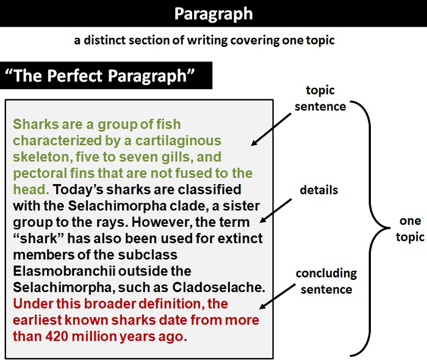

Bad hand write makes your writing look childish. Clear letters and comportable hand wrting makes readers wants to read your writing. Also, this makes your writing more understandable and easier to read.
Paragraph is pack of sentences of a topic. When a paraghraph is finished, to add new one, you start new paragraph on underline ignoring blank spaces. For separating sentences, leave a one letter space blank between sentence and sentence.
Inappropriate grammer makes people hard to understand writings. This make hard to deliver your essence idea to readers.